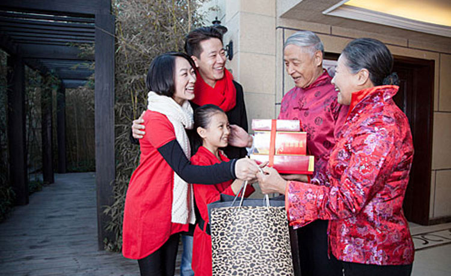

身体还在日复一日的上班、下班、买菜、做饭，心却很诚实的飞到了千里以外的家。大家都不约而同的切换到了“回家过年”的模式，早早的买好了回家的车票，并默默开始了倒计时。你以为你会左手行李右手礼物风尘仆仆的赶回家，刚进门，老妈接礼物老爸接行李，端茶倒水嘘寒问暖……但其实并不是！你以为春节还像小时候那样，有新衣服、压岁钱、好吃的做梦都能笑醒。图样图森破！你有女朋友了吗，你买房子了吗，你年薪百万了吗……往近了说，你礼物选的合家人心意吗！
中国人讲究送礼。春节探望父母、长辈，更要备一份薄礼（具体薄不薄自己看着办，我什么都没说过），表达未曾见面的这段时间自己的思念，顺便表达自己没有忘记对过往许多年的养育、教导。
按照正常的套路，赠送礼物应该是一个特别简单的流程：挑选礼物——付款——把礼物送出去——喜大普奔。可万万没想到……在第一个环节就出了问题！买什么好呢？著作权归作者所有。送吃喝，爸妈也许会放到过期都不打开；送烟酒，看起来不错但不怎么健康；送用品，爸妈到底需要什么呢；送科技，好多科技用品看上去适合老人，但实际功能大多数用不到！一时间感觉被小马哥附体，想要发出灵魂深处的嘶吼！
春节是一张沉甸甸的答卷，不管你是学生党还是上班族，不管你颜值高还是身高低，你都逃不过这一连串的大拷问——“考试成绩怎么样”、“现在月薪多少啦”、“人家XXX家的孩子都在北京买上房子了”、“有对象没”、“什么时候要孩子啊”……
面对着一系列的问题，大多数人应对的方法就是挠挠头同时配上一个无辜的微笑，但其实内心戏复杂着呢！不过，你并不孤单！面对春节拷问这张答卷的同胞还千千万万，他们就是你的智囊团、你的精神支柱，快来紧急补充答案库！
1、爱情篇——“我也不能够是一条狗啊”、“本来是有的卸妆后就没了”、“我一直在思考要不要答应思聪，你就不要给我压力了好嘛”、“阿姨吃菜，阿姨吃菜”、“因为我承受着我这个年纪不该有的颜值与机智”……
2、工作篇——“阿姨，看您皮肤不太好啊，叔叔带您出去旅游了吗”、“伯伯，您升官儿了吗？过完年是不是要高升了啊”、“我接个电话”……
3、学业篇——“还行，每张卷子都有会做的题”、“嗯，不错，老师批得特仁慈，连打钩都买一送一，还带交叉的呢”……
最后小编再送你一个压箱底的万能回答，不管对方如何问，只要你说了这句话，世界瞬间就会清净下来——“你知道安利吗”。
1、休息、团聚、美食……春节小长假因这些元素总会被大家期待，但春节考卷却让很多人头疼；
2、文中回答纯属为了效果，一定注意不要对亲朋好友进行人身攻击，出现任何意外，不关小编任何事哦（傲骄脸）！